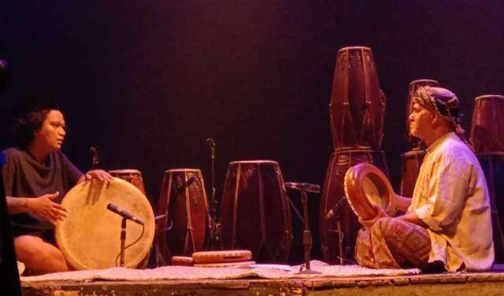

Kentrung adalah seni tradisional bertutur yang populer di Mojokerto dan beberapa daerah lain di Jawa Timur. Seni ini menggabungkan cerita rakyat, dongeng, sejarah, dan hikayat dengan iringan musik sederhana. Pertunjukan kentrung biasanya hanya melibatkan satu atau dua orang, yang disebut dalang kentrung, yang menceritakan kisah-kisah tersebut sambil memainkan alat musik tradisional seperti rebana atau gendang kecil.
Ciri khas kentrung adalah penggunaan bahasa Jawa dengan logat khas Jawa Timuran. Dalang kentrung biasanya mengandalkan keterampilan bercerita yang ekspresif dan humoris untuk menghidupkan cerita. Kisah yang dibawakan bisa berupa legenda lokal, cerita kepahlawanan, atau bahkan ajaran moral yang ditujukan untuk menyampaikan pesan-pesan etika kepada penonton.
Kentrung tidak hanya berfungsi sebagai hiburan, tetapi juga memiliki peran penting dalam menyampaikan pesan moral dan nilai-nilai kehidupan. Cerita-cerita yang dibawakan sering kali sarat dengan petuah-petuah bijak, kritik sosial, atau ajaran agama yang dikemas dalam bentuk cerita rakyat. Melalui pertunjukan yang sederhana namun mendalam, kentrung menjadi media pembelajaran yang efektif bagi masyarakat, terutama di kalangan pedesaan
Beberapa festival kebudayaan dan acara adat sering kali masih menampilkan pertunjukan kentrung sebagai upaya untuk menjaga eksistensi seni ini. Upaya ini penting karena kentrung merupakan salah satu bentuk seni lisan yang mencerminkan identitas lokal dan kekayaan budaya Jawa Timur. Dengan adanya perhatian dari komunitas dan pemerintah setempat, diharapkan kentrung bisa tetap hidup dan dikenal oleh generasi muda.
Meskipun kini sudah jarang ditemui, kentrung masih dijaga oleh beberapa komunitas seniman di Mojokerto yang terus melestarikannya sebagai bagian dari warisan budaya lokal. Pertunjukan kentrung biasanya diadakan pada acara-acara adat atau festival kebudayaan, menjadikannya simbol kekayaan tradisi lisan dan seni bertutur masyarakat Jawa Timur.